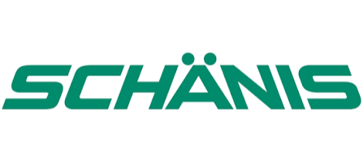

Eine Plattform, die Ihr KMU besser und schneller macht.
Ideen, Massnahmen, Kennzahlen und Audits liegen heute verstreut in Excel, E-Mail, SharePoint und auf Papier. Siato führt Ihr Lean Management in einem System zusammen, direkt in Microsoft 365. Aus guten Absichten werden verbindliche Prozesse.
Guten Morgen, Christoph
Mein persönliches Cockpit · Mittwoch, 11. Juni
Offene Aufgaben
12
−3 diese Woche
Ideen in Umsetzung
8
+2 diese Woche
Aktive PDCA-Zyklen
5
2 vor Abschluss
Audit-Score
94%
+1.5 Pkt.
Umgesetzte Verbesserungen
+18% YoYAlle meine Aufgaben
Waste Walk Halle 2 auswerten
KVP8D-Report Beanstandung #482 prüfen
QualitätFähigkeitsmatrix Team Montage aktualisieren
MA-EntwicklungInternes Audit Q3 vorbereiten
Compliancefliessen
Warum Siato
Bewährt seit 15 Jahren. Modern neu gebaut.
Hinter Siato steht allDates: eine Software, die seit über 15 Jahren in Schweizer KMU läuft und dort Abläufe verkürzt und Fehler vermeidet. Über 80 Betriebe arbeiten damit. Siato übernimmt die erprobten Funktionen und baut sie auf heutiger Technik neu.
Schweizer Datenhoheit
In der Schweiz entwickelt und gehostet. Ihre Daten bleiben hier – DSGVO- und ISO-konform.
Microsoft 365 integriert
Single Sign-On, Teams, Outlook und SharePoint. Siato fügt sich nahtlos in Ihre bestehende IT.
Faire KMU-Preise
Schon ab CHF 15.– pro Nutzer. Sie zahlen nur die Module, die Sie wirklich brauchen.
Erweiterbar & zukunftssicher
Auf Microsoft Power Platform gebaut. Eigene Prozesse ergänzen Sie ohne Lizenz-Mehrkosten.
Wozu Siato
9 Gründe, warum Lean Management ohne Plattform scheitert
Lean scheitert selten an der Methode. Es scheitert an der Umsetzung.
- 1
Papier und Excel halten nicht
Eine Massnahme auf einer Excel-Liste verschwindet in der Schublade. Niemand weiss, wie der Stand ist, wer dran ist und ob sie je umgesetzt wurde.
Jede Massnahme hat einen Verantwortlichen, ein Datum und einen Status. Workflows leiten sie weiter, damit keine liegen bleibt.
- 2
Führung kann nicht überall sein
Keine Führungskraft kontrolliert täglich jeden Bereich persönlich. Was gut läuft und was überfällig ist, sieht sie zu spät.
Der Aufgabenüberblick über das ganze Team steht jederzeit da, samt der Massnahmen, die überfällig sind.
- 3
Beim Audit wird es eng
ISO 9001 und branchenspezifische Vorschriften verlangen lückenlose Dokumentation. Ohne System wird die Suche danach zur Nachtschicht.
Gelenkte Dokumente, interne Audits und Normenprüfung liegen am selben Ort. Die Nachweise sind da, wenn der Auditor fragt.
besser
Module
Alles drin, was Lean braucht.
23 Module in sieben Bereichen – von der ersten Idee bis zum bestandenen Audit. Sie greifen ineinander, statt nebeneinander zu stehen.
Transparenz & Konsequenz
Jeder sieht beim Start, was heute ansteht: offene Aufgaben, Termine, eigene Kennzahlen. Führungskräfte sehen dasselbe für ihr Team und merken früh, wo etwas liegen bleibt.
- Mein persönliches Cockpit
- Alle meine Aufgaben
- Aufgaben aus Sicht der Führung
Verbesserung & KVP
Ideen aus der Belegschaft werden erfasst, bewertet und freigegeben. Verbesserungsprojekte laufen nach Plan-Do-Check-Act, Verschwendung wird direkt am Shopfloor aufgenommen.
- Ideenmanagement
- PDCA-Zyklen
- Waste Walks
Qualität & Abweichungen
Reklamationen von Kunden, Probleme mit Lieferanten und intern entdeckte Fehler laufen über denselben Weg: Sofortmassnahme, Ursache, Korrektur – alles nachvollziehbar dokumentiert.
- Kundenbeanstandungen
- Lieferantenbeanstandungen
- Interne Fehler
- 8D-Report
Audits & Compliance
Arbeitsanweisungen sind versioniert und freigegeben, interne Audits laufen nach Plan, Normen wie ISO 9001 werden systematisch geprüft. Unterweisungen bestätigen Mitarbeitende digital.
- Gelenkte Dokumente
- Interne Audits
- Normenprüfung
- Unterweisungen
Führung & Kommunikation
Projekte, Kennzahlen und die täglichen Shopfloor-Runden an einem Ort. Betriebliches Wissen bleibt im Betrieb, auch wenn jemand geht.
- Projektadministration
- Wissensmanagement
- Shopfloor
- Kennzahlen
Mitarbeitenden-Entwicklung
Ziele werden gemeinsam vereinbart und nachgehalten, Beurteilungen laufen nach demselben Muster. Die Fähigkeitsmatrix zeigt, wer was kann und wo eine Lücke ist.
- Persönliche Zielvereinbarung
- MA-Beurteilungen
- Fähigkeitsmatrix
- Aus- und Weiterbildung
Betrieb & Instandhaltung
Wartungspläne liegen pro Maschine hinterlegt, Aufträge werden automatisch ausgelöst, jede Durchführung ist protokolliert. Das senkt ungeplante Ausfälle und verlängert die Lebensdauer der Anlagen.
- Wartung und Instandhaltung
Dazu kommen vier Systemmodule, die alles zusammenhalten: Organisation, Benutzer und Rollen, Stammdaten und die Workflows, die dafür sorgen, dass keine Massnahme vergessen geht.
überall
Überall einsatzbereit
Desktop, Tablet oder Smartphone – Siato ist dabei.
Verbesserung passiert nicht am Schreibtisch allein. Siato läuft im Browser und als App auf jedem Gerät – im Büro, am Shopfloor-Terminal oder unterwegs. Ihr Team erfasst Ideen und Waste Walks genau dort, wo sie entstehen.
Verbesserung & KVP
Aus Ideen werden messbare Resultate
Jede Verbesserung läuft durch den PDCA-Zyklus – jede Phase dokumentiert, Verantwortlichkeiten zugewiesen, der Fortschritt nachverfolgt. So bleibt KVP kein Schlagwort, sondern wird zur Routine, deren Wirkung Sie schwarz auf weiss sehen.
- Ideenmanagement – einreichen, bewerten, freigeben
- PDCA-Zyklen – jede Phase dokumentiert und nachverfolgt
- Waste Walks – Verschwendung direkt am Shopfloor erfassen
Führung & Kommunikation
Alle Kennzahlen, ein Blick
Vom Shopfloor bis zur Geschäftsleitung sehen alle dieselben Zahlen. Führungskräfte erkennen Trends früh und entscheiden auf Daten statt auf Zuruf.
- Kennzahlen zentral erfasst, visualisiert und ausgewertet
- Shopfloor-Runden direkt am Board – papierlos
- Projektstatus mit frühem Signal bei Verzögerung
Qualität & Abweichungen
Fehler systematisch abstellen
Reklamationen von Kunden, Probleme mit Lieferanten und intern entdeckte Fehler laufen über denselben Weg: Sofortmassnahme, Ursachenanalyse, Korrektur – mit lückenloser Historie statt Bauchgefühl.
- Kundenbeanstandungen mit vollständiger Kommunikationshistorie
- Interne Fehler – erkannt, bevor sie den Kunden erreichen
- 8D-Report von der Ursache bis zur Wirksamkeitsprüfung
Referenzen
Kunden, die dank Siato besser und schneller arbeiten.

«Vorher lagen unsere Massnahmen in vier Excel-Listen, und niemand wusste, welche die aktuelle ist. Heute steht alles an einem Ort, und ich sehe am Montagmorgen in zwei Minuten, wo wir stehen.»
«Das Beste ist, dass niemand ein neues Programm lernen musste. Siato ist einfach in Teams drin. Die Leute in der Halle erfassen ihre Ideen aufs Handy, und die Idee ist wirklich dort gelandet.»
«Beim letzten Audit haben wir keine einzige Nacht durchgearbeitet. Alles, was der Auditor sehen wollte, war da – nachvollziehbar, mit Datum und Verantwortlichkeit.»
fair
Preise
Sie zahlen nur, was Sie nutzen
Modular aufgebaut und mitwachsend. Starten Sie mit einem Modul – erweitern Sie, wann immer Sie wollen.
Start
Für KMU, die gezielt einzelne Lean-Themen digitalisieren.
- Einzelne Module frei wählbar
- CHF 5.– pro Nutzer / Monat
- Microsoft 365 Integration
- Updates im Halbjahres-Rhythmus
Professional
Die meistgewählte Lösung – mehrere Module im Verbund.
- Mehrere Module im Paket
- Vergünstigter Paketpreis
- Onboarding & Schulung
- Priorisierter Support
Custom
Eigene Prozesse auf der Power Platform – ohne Lizenz-Mehrkosten.
- Unternehmenseigene Prozesse
- Gleiche Datenbank, keine Extra-Lizenz
- Ablösung von Excel & Drittanbietern
- Volle Power-Platform-Funktionalität
Power Platform Hosting: CHF 5.– pro Benutzer / Monat · Alle Preise exkl. MwSt.
Häufige Fragen
Das fragen KMU vor dem Start.
Ihre Frage ist nicht dabei? Rufen Sie an – das geht schneller als jedes Formular.
Demo buchen
Sehen Sie sich Siato in 30 Minuten an
Wir zeigen Ihnen live, wie Siato Ihre Lean-Prozesse abbildet – an Ihren eigenen Beispielen, ohne Verpflichtung.